Hamanaka
Hamanaka · Hokkaido
Hamanaka
Highlighted on the Hokkaido map.
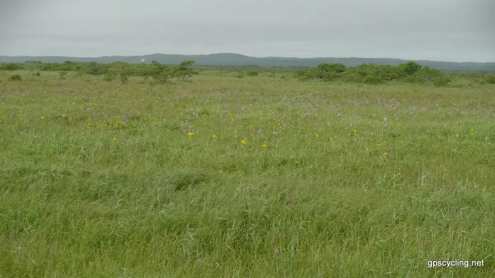
Stay
ワークマンハウス浜中
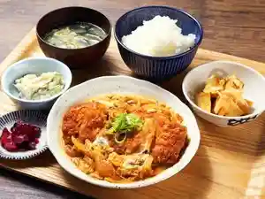
Waakumanhausu Hamanaka
えとぴりか村
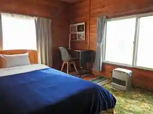
Etopirika Mura
宿房 樺のん（霧多布）
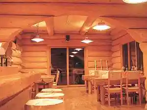
Shukubou Kaba Non ( Kiritappu )
Dining
やちぼうずCafe
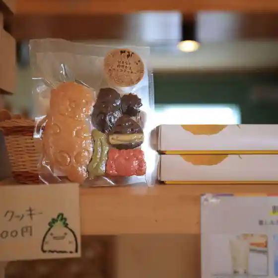
Yachibouzu Cafe
居酒屋しばらく
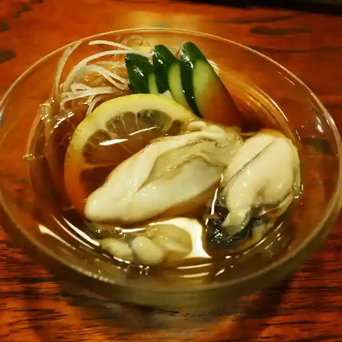
Izakaya Shibaraku
ハマラボ
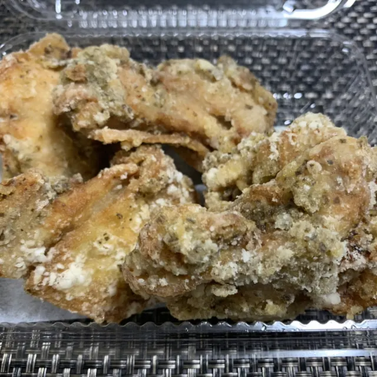
Hamarabo
民宿 岬

Minshuku Misaki
海の幸 浜中海鮮亭
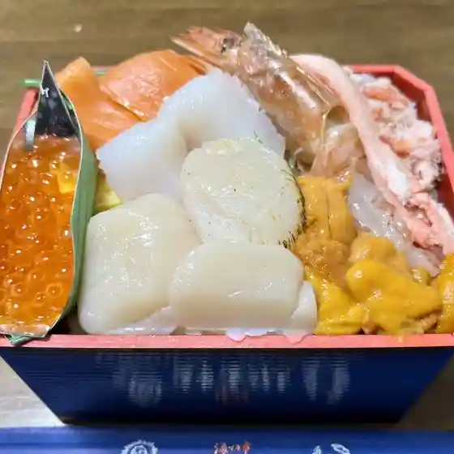
Umi No Sachi Hamanaka Kaisen Tei
湿原ユートピア
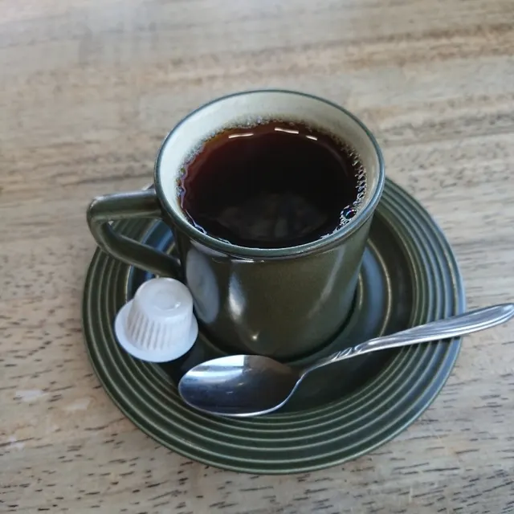
Shitsugen Yuutopia
小松牧場
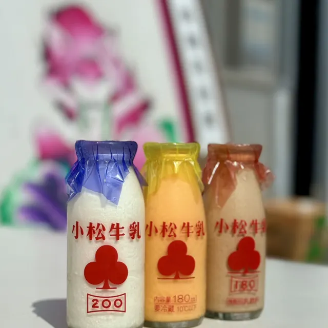
Komatsu Bokujou
M.ROSE
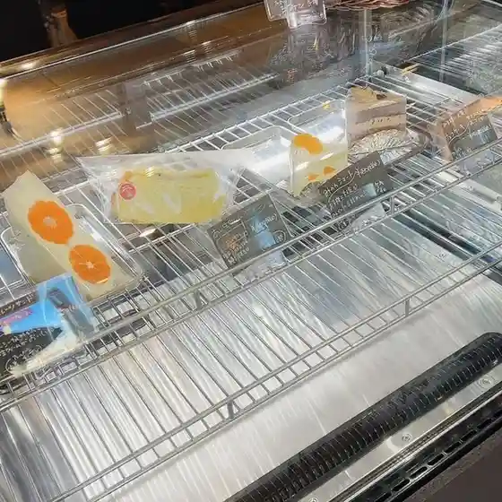
M . Rose
森のくまさん
Mori Nokumasan
湿原の小さな宿 きりたっぷ里
Shitsugen No Chiisa Na Yado Kiritappu Sato
まんぷく亭
Manpuku Tei
えとぴりか村
Etopirika Mura
やぶ東
Yabu Higashi
寿しの富士美
Hisashi Shino Fujimi
宿房 樺のん
Shukubou Kaba Non
セイコーマート いしばし店
Seikoomaato Ishibashi Mise
コープはまなか
Koopu Hamanaka
ペンション ポーチ
Penshon Poochi
セイコーマート 浜中店
Seikoomaato Hamanaka Mise
霧多布温泉ゆうゆ
Kiritappu Onsen Yuuyu
コープはまなか 桜店
Koopu Hamanaka Sakura Mise
浜中漁業協同組合
Hamanaka Gyogyou Kyoudoukumiai
玉の川
Tama No Kawa
物産店 ふじ
Bussan Mise Fuji